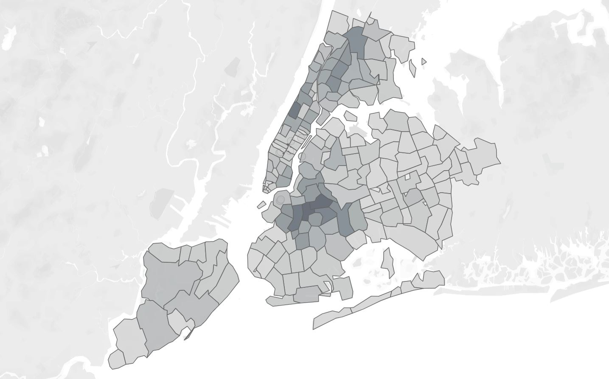

About Me

Hi, my name is Altaaf and I work in the banking and finance industry as a Data Analyst. With over 14 years of experience, I am passionate about assisting organisations in using data to solve business problems.
I've worked on a number of projects in insurance, banking, finance, and telecommunications industries. Technical expertise and subject matter expert in data management, data analytics, vendor management and engagement with a demonstrated ability to work efficiently and collaboratively across industries to deliver innovative and high impact data solutions to meet business and organisational needs.
I hold a Bachelor’s degree in Information Technology (E-Business Major) from Western Sydney University (formerly known as University of Western Sydney). I am currently undertaking Graduate Certificate in Analytics at University of New South Wales.
Do you want to work together? Please reach out to me through the Contact section or connect with me via Linkedin.
Projects
CRAS Search Utility
The Customer Risk & Account Stop (CRAS) Search Utility is a Python based desktop application designed to streamline internal customer data lookups. Built using Tkinter and leveraging powerful data handling libraries like Pandas, CRAS provides a user-friendly GUI to quickly retrieve key customer details (Risk Code and Account Stop Type) from a central SQLite database.
It supports flexible input methods; from manually entering comma separated IDs to uploading and processing large Excel or CSV files. A core feature is the built-in data standardisation (zero-filling IDs) and reconciliation reporting, ensuring accurate and verifiable results, which can be instantly exported to Excel.
Key Features Demonstrated:
- GUI Development: Robust, cross-platform interface using Tkinter.
- Data Processing: Efficient handling and standardisation of bulk data via Pandas.
- Database Integration: Seamless connectivity and querying of an SQLite backend.
- Application Deployment: Packaged into standalone executables for Windows and macOS using PyInstaller.
Link to Repository: https://github.com/altaafkhan/cras.git
Rat City, NY
Legend has it that there is a rat for every person in New York city. But no one really knows exactly how many there are.

I created a Tableau dashboard for #MakeoverMonday that shows which of the five New York boroughs; Brooklyn, Bronx, Manhattan, Queens and Staten Island has the most rat sightings by year and month.
Click here to view the dashboard.
Everest, To Climb or Not?
I have been hooked on the idea of climbing Mount Everest ever since I saw it when successfully completing the Everest Base Camp trek in September 2014.
I used publicly available expedition data, to answer the following questions:
- Which season and routes are the best to the summit?
- What is the summit and death ratios of expedition leaders who have lead at least 10 expeditions and the agencies they are affliated with?
- Where are the summiteers from and their age?
- What is the main cause of death and are more deaths occurring on the way to the summit or back?
- How does Mt Everest compare in terms of summit and death ratio to other 8000m peaks in the Nepalese Himalayas that are open for climbing?
- Conclusion & Recommendation on whether I should climb Everest or not.
I performed analysis to answer these questions and created a Tableau story of my findings as a Capstone Project for Data Visualisation with Tableau Specialisation offered by UD Davis through Coursera.
Click here to see the Tableau story.
Contact